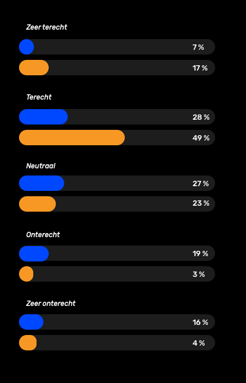

Nederlanders zonder migratieachtergrond

Etnisch profileren is een vorm van discriminatie en daarom in
strijd met de mensenrechten. Wanneer de politie zonder goede
of geldige reden iemand stopt, controleert, fouilleert of aanhoudt,
(mede) vanwege zijn huidkleur of herkomst is er sprake van etnisch
profileren.
— Amnesty International
Organisatie CTRL ALT DELETE heeft een enquete gehouden in Amsterdam over het onderwerp etnisch profileren. Uit de enquete bleek dat 485 mensen van de 1900 ondervraagde daadwerkelijk contact hadden met de politie in de afgelopen 12 maanden. Hierop hebben wij onze datavisualisaties gebaseerd.
Het vergelijken van de gevolgen van het contact van de politie na benadering, met of de mensen die terecht of onterecht vonden. Hierin wordt onderscheid gemaakt in of de mensen wel of niet een migratie achtergrond hebben.
Dit zijn de gemiddelde cijfers betreft het rapportcijfer (tussen de 1 en 10) wat de correspondenten de politie geeft over het gebied van vetrouwen in de politie.
6.8 / 7.6
Door de politie benaderd / Zelf de politie benaderd
5.6 / 8.7
Door de politie benaderd / Zelf de politie benaderd
Hoe voelde Amsterdammers zich aangesproken?
Nederlanders zonder migratieachtergrond
Nederlanders met migratieachtergrond
Wat was het gevolg na het contact met de politie?
Filter
Organisatie Controle Alt Delete streeft naar een politie voor en van iedereen. Zij zetten zich in tegen etnisch profileren en vóór eerlijke en effectieve politiecontroles. Wil je meer weten over het onderwerp entisch profileren en/of meer te weten willen komen over de organistatie Controle Alt Delete? Bekijk dan hier hun website.